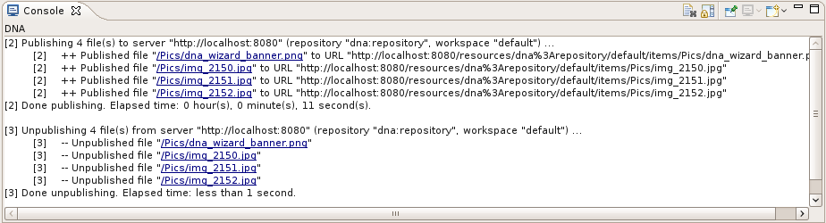
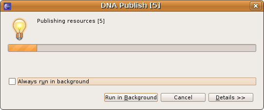

The DNA Console is shown in the Workbench Console view. Entries show the status and outcome of the publishing or unpublishing operations.
Here is what the DNA Console looks like:
There are view toolbar buttons to clear the console, scroll lock, pin the console, display a different console, and to open another DNA Console.
For each operation there is an entry at the start of the operation that identifies the job number, operation type, number of files involved in the operation, server, repository, and workspace. There is another entry at the end of the operation that identifies the job number, operation type, and how long the operation took. Inbetween these entries are entries for each file involved in the operation. The file entry takes on the form of a job number, message prefix, and message. The message consists of an operation type, eclipse workspace path, and the URL of the DNA repository for that file. The URL is a hyperlink that opens that file in the default or last used editor for that file.
Here are the file entry message prefixes:
| ++ | if the file was successfully published (uploaded) |
| -- | if the file was successfully unpublished (removed) |
| ERROR | if there was an error publishing or unpublishing the file |
| INFO | if there was an informational message publishing or unpublishing the file |
| WARN | if there is a warning when publishing or unpublishing a file (like trying to unpublish a file that was never unpublished) |
Each publishing or unpublishing operation can be run "in the background" so you don't have to wait around until an operation is finished. Simply click "Run in Background" on the operation dialog. This dialog identifies the operation type, the job number, and the operations progress. You can also cancel the operation using this dialog.
Here is what the Operation Dialog looks like:
